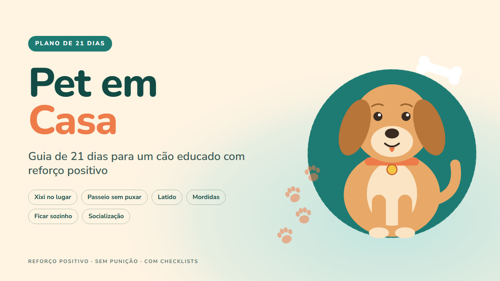

Pet em Casa
Guia de 21 dias para um cão educado com reforço positivo
Roteiro de 21 dias com reforço positivo para ensinar xixi no lugar, passeio sem puxar, menos latido e ficar sozinho. Sem gritos, sem enforcador.
Quero o meu por R$ 27Ebook em PDF com checklists para imprimir · acesso na hora · garantia de 7 dias

Você se reconhece?
- Seu cão faz xixi pela casa, puxa a guia até a padaria, late para cada barulho do corredor ou chora quando você sai?
- E você já ouviu tanto conselho diferente que nem sabe por onde começar?
O Pet em Casa é um guia prático, em português, para tutores sem experiência que vivem em casa ou apartamento. Ele organiza o adestramento com reforço positivo em um roteiro de 21 dias, com exercícios de 3 a 5 minutos que cabem na rotina de quem trabalha.
O que tem dentro
- Como o cão aprende: marcador, timing, critérios e leitura da linguagem corporal.
- Xixi e cocô no lugar certo: horários-chave, área limitada, recompensa no local e limpeza correta.
- Passeio sem puxar a guia: equipamento, técnica da árvore, mudança de direção e progressão de ambientes.
- Latido: os cinco tipos, o que fazer e o que evitar em cada um, e como premiar o silêncio.
- Mordidas de filhote, "troca!" e sinais de alerta que pedem ajuda profissional.
- Ficar sozinho: tabela de progressão de tempo, saídas discretas e brinquedo recheável congelado.
- Socialização: a janela sensível, lista de experiências e cuidados com o cão medroso.
- Comandos de base: nome, senta, deita, fica, vem, deixa e lugar.
- Plano de 21 dias, dia a dia, com objetivo, exercícios, critério para avançar e checklist.
- Tabela de problemas comuns e checklists para imprimir.
É para você se…
- Tutores de filhotes que acabaram de chegar em casa.
- Tutores de cães adultos com hábitos que atrapalham a convivência.
- Quem mora em apartamento e precisa de um cão mais tranquilo com vizinhos, elevador e visitas.
- Quem quer treinar com carinho e entender o porquê de cada exercício.
Não é para você se…
- Casos de agressividade séria, mordidas que machucaram ou ataques: esses casos precisam de um médico-veterinário comportamentalista.
- Quem procura treino de proteção, guarda ou esporte.
- Quem procura orientação médica, remédios ou dietas: o guia não trata disso.
Aviso importante: este guia não substitui o veterinário. Procure um veterinário para dor, doença ou comportamento agressivo.
Sem promessa milagrosa: cada cão tem seu ritmo. Os 21 dias são um roteiro para construir hábitos e uma base sólida, não uma garantia de resultado no mesmo prazo. Alguns cães avançam rápido; outros precisam repetir etapas.
Tudo por um pagamento único
Ebook em PDF com checklists para imprimir · sem mensalidade
Pix ou cartão · acesso imediato pela área de membros da Kiwify (o link chega no seu e-mail)
100% de volta
Leia por 7 dias. Se não servir, o dinheiro volta inteiro.
Peça o reembolso pela Kiwify ou pelo e-mail lucaszone36@gmail.com, sem precisar explicar. Esse prazo é um direito seu pelo Código de Defesa do Consumidor.
Quero testar sem riscoPerguntas frequentes
Como recebo?
Acesso imediato pela área de membros da Kiwify. O link de acesso chega no e-mail informado na compra.
Consigo ler no celular?
Sim. O PDF abre no celular, no tablet e no computador.
Serve para filhote e para cão adulto?
Sim. O plano de 21 dias tem ajustes para filhotes e para cães adultos.
Substitui o veterinário?
Não. O guia ensina rotina e comportamento. Para dor, doença ou agressividade, procure um veterinário.
E se eu me arrepender?
Você tem 7 dias para pedir 100% do valor de volta, sem justificar, pela Kiwify ou pelo e-mail lucaszone36@gmail.com.